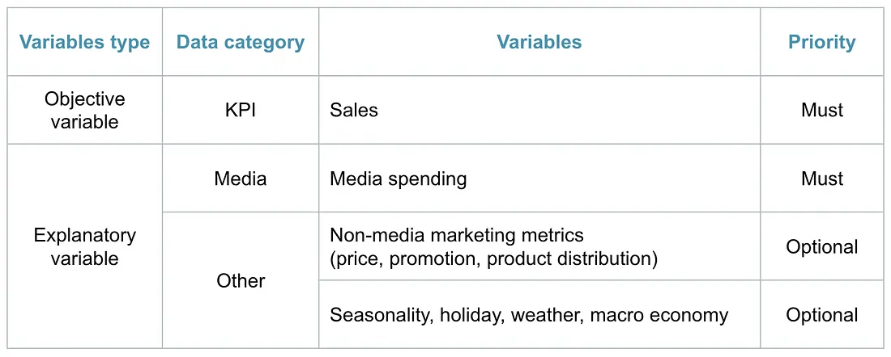
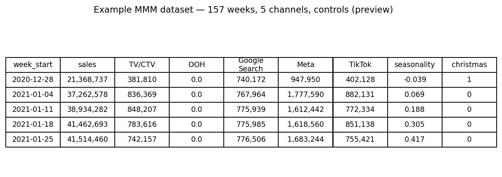

6.2 Ein MMM aufbauen und optimieren
Über die deutsche Ausgabe
Diese Seite ist eine KI-Übersetzung der englischen Ausgabe von Marketing Science in Python. Die englische Ausgabe ist maßgeblich und hat bei Abweichungen Vorrang. Code, Notebooks und Text in Abbildungen bleiben auf Englisch. Englische Ausgabe lesen
Was ist Marketing-Mix-Modeling?
Marketing-Mix-Modeling (MMM) ist ein statistischer Ansatz, der aggregierte Zeitreihendaten (typischerweise wöchentlicher Umsatz und Medienausgaben je Kanal) verwendet, um zu schätzen, wie viel jeder Marketingkanal zu den Geschäftsergebnissen beiträgt. Anders als die Attribution auf Nutzerebene arbeitet MMM mit aggregierten Daten und benötigt kein individuelles Tracking, was es widerstandsfähig gegenüber dem Wegfall von Cookies, App Tracking Transparency und den Beschränkungen der Walled Gardens macht.
MMM dient drei Zwecken:
- Messen: den Beitrag jedes Kanals und den Return on Ad Spend (ROAS) quantifizieren.
- Simulieren: „Was wäre, wenn“-Fragen beantworten, etwa: Was passiert mit dem Umsatz, wenn wir die TV-Ausgaben um 30% kürzen?
- Optimieren: ein festes Budget so auf die Kanäle verteilen, dass das erwartete Ergebnis maximiert wird.

Das neu erwachte Interesse an MMM ist nicht bloß Nostalgie. Da das Tracking auf Nutzerebene immer unzuverlässiger wird, ist die aggregierte Modellierung heute der praktikabelste Weg, die kanalübergreifende Medieneffektivität zu messen.
Die MMM-Gleichung
In seiner einfachsten Form ist MMM eine Regression des wöchentlichen Umsatzes auf die Medienausgaben, kontrolliert um Feiertage, Promotions und andere Nicht-Medien-Treiber:
\[ y_t = \beta_0 + \sum_{c=1}^{C} \beta_c \cdot x_{c,t} + \sum_{k} \gamma_k \cdot z_{k,t} + \varepsilon_t \]
wobei \(y_t\) der Umsatz zum Zeitpunkt \(t\) ist, \(x_{c,t}\) die Ausgaben in Kanal \(c\), \(z_{k,t}\) die Kontrollvariablen und \(\varepsilon_t\) das Rauschen.

Diese einfache Regression reicht aus zwei Gründen nicht aus. Erstens sind Medieneffekte nicht unmittelbar: Ein TV-Spot in dieser Woche kann die Käufe in den folgenden Wochen noch beeinflussen (Carryover). Zweitens sind Medieneffekte nicht linear: Der hundertste GRP (Gross Rating Point, ein Standardmaß für die erreichte TV-Reichweite) in einer Woche bringt weniger als der erste (abnehmende Grenzerträge).
Ein realistischeres Modell wendet vor der Linearkombination Adstock- (Carryover) und Sättigungstransformationen (abnehmende Grenzerträge) an:
\[ y_t = \beta_0 + \sum_{c=1}^{C} \beta_c \cdot \text{Saturation}\bigl(\text{Adstock}(x_{c,t})\bigr) + \sum_{k} \gamma_k \cdot z_{k,t} + \varepsilon_t \]

Sättigung (abnehmende Grenzerträge)
Jeder Medienkanal sättigt irgendwann: Je mehr Sie in einem Kanal ausgeben, desto weniger bringt jeder zusätzliche Dollar ein. Die erste Million Dollar an TV-Ausgaben treibt erheblichen inkrementellen Umsatz; die zehnte Million treibt weit weniger. Abbildung 4 zeigt die drei Bereiche, die dadurch entstehen: eine Unterinvestitionszone, in der jeder Dollar noch hart arbeitet, einen optimalen Bereich und eine Sättigungszone, in der zusätzliche Ausgaben weitgehend verschwendet sind.

Die Hill-Funktion ist die gängigste Art, das zu modellieren:
\[ \text{Hill}(x) = \frac{x^S}{x^S + K^S} \]
wobei \(K\) (der Halbsättigungspunkt, oft EC50 genannt) das Ausgabenniveau ist, bei dem der Kanal 50% seines maximalen Effekts erreicht, und \(S\) (die Steigung) steuert, wie scharf die Kurve abknickt.
Eine praktische Anmerkung zu \(K\): Meridian misst es in eigenen Einheiten, mit Medien, die durch ihren Median skaliert sind, und Adstock-Gewichten, die auf Summe eins normiert sind, sodass ein dauerhaft aktiver Kanal auf dieser Skala nahe 1 liegt. Die Demo gibt der Sättigung einen einzigen breiten, kanalunabhängigen Prior, der sanft gekrümmte Kurven bevorzugt, behält die Funnel-Struktur beim Adstock bei und zeigt im Notebook, was diese Wahl für einen Kanal entscheidet, den die Daten nicht identifizieren können.
Diese Krümmung ist es, die eine Budgetumschichtung wertvoll macht. In Abbildung 5 sitzt Kanal X tief in seiner Sättigungszone, während Kanal Y noch Spielraum hat. Das Budget von X zu kürzen kostet $1M an Umsatz, während dasselbe Budget bei Y $3M einbringt: ein Nettogewinn von $2M bei gleichen Gesamtausgaben. Budget von gesättigten Kanälen zu unterinvestierten zu verschieben kann den Gesamtertrag erhöhen, selbst wenn der durchschnittliche ROAS des gesättigten Kanals höher aussieht. Der durchschnittliche ROAS teilt den gesamten inkrementellen Umsatz eines Kanals durch seine Gesamtausgaben; der marginale ROAS ist die Steigung der Kurve an der Stelle, an der der Kanal gerade steht, und das ist es, was der nächste Dollar einbringt.

Adstock (Carryover-Effekte)
Werbung hört nicht in dem Moment auf zu wirken, in dem sie nicht mehr ausgestrahlt wird. Adstock erfasst diesen verzögerten Effekt. Die einfachste Form ist der geometrische Zerfall (Meridian verwendet dieselben Gewichte, geteilt durch ihre Summe):
\[ \text{Adstock}_t = x_t + \lambda \cdot \text{Adstock}_{t-1} \]
wobei \(\lambda \in [0, 1]\) die Retentionsrate ist. Ein höheres \(\lambda\) bedeutet längeren Carryover. Abbildung 6 und Abbildung 7 zeigen dieselben drei Werbe-Flights unter zwei Retentionsraten. Bei einer hohen Rate, typisch für Upper-Funnel-Kanäle wie TV, hält der Effekt jedes Flights noch lange nach der Ausstrahlung an, und überlappende Flights stapeln sich übereinander. Bei einer niedrigeren Rate, typisch für digitale Kanäle, verblasst der Effekt innerhalb von Tagen.


Die Retentionsrate lässt sich leichter als Halbwertszeit verstehen, die Anzahl der Perioden, bis der Effekt auf die Hälfte gefallen ist, \(\ln(0.5) / \ln(\lambda)\). Bei wöchentlicher Granularität werden Upper-Funnel-Kanäle wie TV üblicherweise mit Halbwertszeiten von mehreren Wochen modelliert, während Lower-Funnel-Kanäle wie Paid Search innerhalb von etwa einer Woche abklingen. Die Begleit-Demo modelliert jeden Kanal mit geometrischem Adstock über ein Fenster von 12 Wochen und zentriert die Zerfalls-Priors nach Funnel-Stufe: 6 Wochen für TV/CTV und OOH (\(\lambda \approx 0.89\)), 3 Wochen für Meta und TikTok (\(\lambda \approx 0.79\)) und 1 Woche für Google Search (\(\lambda = 0.5\)). Betrachten Sie diese Werte als Ausgangs-Priors, die von den Daten bewegt werden sollen, nicht als Fakten: Die veröffentlichten Empfehlungen variieren, und die richtigen Werte hängen von Ihrer Kategorie und Ihrer Datengranularität ab. Eine „wöchentliche“ Retentionsrate, auf Tagesdaten angewendet, impliziert eine ganz andere Halbwertszeit.
Es gibt flexiblere Alternativen. Der Weibull-Adstock erlaubt eine nicht-monotone Zerfallsform: Der Effekt kann einige Tage nach dem Kontakt seinen Höhepunkt erreichen, bevor er abklingt, was Kanäle wie E-Mail oder Direktmailing besser abbildet, bei denen es eine natürliche Verarbeitungsverzögerung gibt.
Datenanforderungen
MMM benötigt drei Kategorien von Eingabedaten:
- Zielvariable: wöchentlicher Umsatz oder wöchentliches Absatzvolumen auf Marken- oder Produktebene.
- Medienausgaben: wöchentliche Ausgaben je Kanal (TV, Social, Display, Suche, Direktmailing usw.).
- Kontrollvariablen: Feiertage, Saisonalitätsindikatoren, Promotions, Preisänderungen, Wettbewerberaktivität, makroökonomische Faktoren oder jeder andere Nicht-Medien-Treiber, der Umsatzschwankungen erklären könnte.

Empfohlene Granularität:
- Zeit: Wöchentlich. Tagesdaten sind verrauschter; Monatsdaten haben zu wenige Beobachtungen.
- Historie: Mindestens 2–3 Jahre an Daten (etwa 104 bis 156 Wochen). Mit weniger Historie wird es schwierig, Medieneffekte von der Saisonalität zu trennen.
- Geografie: National oder auf Markenebene ist üblich. Subnationale Modelle (auf Geo-Ebene) können leistungsfähiger sein, brauchen aber mehr Daten und sorgfältige Modellierung.
- Kanäle: Nehmen Sie nur Kanäle auf, deren Ausgaben tatsächlich variieren. Wenn ein Kanal jede Woche denselben Betrag ausgibt, kann das Modell seinen Effekt nicht lernen.
Eine Prüfung gehört zu diesen Anforderungen dazu und wird leicht übersprungen. Adstock und Sättigung glätten den Beitrag eines Kanals, sodass die Medien den Umsatz von Woche zu Woche am Ende weniger bewegen können als das, was die Kontrollvariablen nicht erklären. Wenn das passiert, sind die Medienkoeffizienten nicht identifiziert, und keine Wahl des Priors repariert das: Dem Schätzer bleibt nichts mehr, womit er Medien von der Baseline trennen könnte. Vergleichen Sie die beiden Größen vor der Anpassung. Das Begleit-Notebook tut das in Schritt 2b.
Ein weiterer Grund, warum die Kontrollvariablen wichtig sind: Medienausgaben und Umsatz teilen sich konstruktionsbedingt meist Trend und Saisonalität, und ein gemeinsamer Kalender allein kann eine starke Korrelation zwischen zwei Reihen erzeugen, die nichts miteinander zu tun haben. Die Saisonalitäts- und Trendkontrollen sind es, die diese gemeinsame Struktur aus den Medienkoeffizienten heraushalten.

Der bayesianische Blickwinkel
Bevor wir eine Implementierung durchgehen, verdient eine Designentscheidung Aufmerksamkeit: Modernes MMM ist überwiegend bayesianisch. Der Grund ist praktisch, nicht philosophisch.
- Priors kodieren Fachwissen. Wenn Ihr Team aus früheren Experimenten weiß, dass der TV-ROAS ungefähr 2.0 beträgt, können Sie das als Prior kodieren. Das Modell aktualisiert diese Annahme mit den Daten. Ohne Priors könnte das Modell allein wegen Multikollinearität unplausible Schätzungen liefern. Die Kehrseite dieser Bequemlichkeit ist es wert, einmal ausgesprochen zu werden: Für einen Kanal, den die Daten nicht identifizieren können, ist die Zahl, die das Modell zurückgibt, die Zahl, die Sie in den Prior gesteckt haben. Die Demo hat einen solchen Kanal, und Abschnitt 6.3 geht hin und misst ihn.
- Kredibilitätsintervalle statt Punktschätzungen. Statt „TV-ROAS = 2.3“ erhalten Sie „TV-ROAS: Median 2.3, 90%-KI [1.1, 3.8]“. Ein breites Intervall bedeutet, dass Sie bei großen Budgetverschiebungen auf Basis dieser Schätzung vorsichtig sein sollten.
- Natürliche Integration mit Experimenten. Wenn Sie ein Geo-Lift-Experiment durchführen und den inkrementellen Effekt eines Kanals schätzen, können Sie diese Evidenz als informativen Prior in das MMM einspeisen. Das verengt die Posterior-Verteilung und verbessert die Identifizierbarkeit, ein Workflow, den wir in Abschnitt 6.4 im Detail entwickeln.
Deshalb verwenden Werkzeuge wie Meridian und PyMC-Marketing unter der Haube bayesianische Inferenz.
Mehrere Open-Source-Bibliotheken implementieren die Konzepte dieses Kapitels. Die drei meistgenutzten:
| Bibliothek | Funktionen | GitHub |
|---|---|---|
| Meridian | Python-basiertes bayesianisches MMM von Google. Starke Unterstützung für Daten auf Geo-Ebene und Kalibrierung mit Experimenten. Nachfolger des inzwischen eingestellten LightweightMMM. | google/meridian |
| PyMC-Marketing | Python-basiertes Toolkit für bayesianische Marketingmodellierung. Deckt MMM, CLV und Kundenwahlmodelle ab. Flexibel, erfordert aber mehr Modellierungsurteil. | pymc-labs/pymc-marketing |
| Robyn | R-basierte MMM-Bibliothek von Meta. Verwendet Ridge-Regression und Prophet. Gut für schnelle Basismodelle. | facebookexperimental/Robyn |
Die Kernkonzepte (Adstock, Sättigung, bayesianische Schätzung und Budgetoptimierung) sind in allen dreien dieselben. Dieses Kapitel verwendet Meridian, weil es Python-basiert und leicht zu starten ist: Selbst ohne viel Anpassung erzeugt es gepflegte zweiseitige HTML-Berichte zu den Modellergebnissen und zur Budgetoptimierung, die Sie mit Stakeholdern teilen können. Der Praxisdurchlauf unten verlinkt auf beide.
Ein Praxisdurchlauf mit Meridian
Begleit-Notebook: sec6.2_6.4_mmm_meridian.ipynb demonstriert einen vollständigen MMM-Workflow mit Googles Meridian-Bibliothek.
Auf GitHub ansehen
Laden und Aufbereiten der Daten. Der Demo-Datensatz enthält 157 Wochen Umsatzdaten mit 5 Medienkanälen (TV/CTV, OOH, Google Search, Meta, TikTok) sowie Kontrollvariablen für Feiertage und Saisonalität. Meridian verwendet einen DataFrameInputDataBuilder, um seine Eingabedaten aus einem pandas DataFrame zu konstruieren. Die Skalierung wird intern erledigt; eine manuelle Normalisierung ist nicht nötig. Das wichtige Detail ist, dass Meridian die Sättigung auf media_cols (Kontaktvolumen wie Impressions oder Klicks) anwendet, während media_spend_cols als Kostenbasis für den ROAS dienen.
channels = ["TV/CTV", "OOH", "Google Search", "Meta", "TikTok"]
media_cols = [
"tv_ctv_impressions", "ooh_impressions", "google_clicks",
"meta_impressions", "tiktok_impressions",
]
media_spend_cols = [
"tv_ctv_spend", "ooh_spend", "google_spend",
"meta_spend", "tiktok_spend",
]
control_cols = [
"seas_sin52", "seas_cos52",
"hldy_thanksgiving", "hldy_christmas",
"trend", "trend_sq",
]
builder = data_frame_input_data_builder.DataFrameInputDataBuilder(
kpi_type='revenue',
default_kpi_column='sales',
default_time_column='time',
default_geo_column='geo',
)
data = (
builder
.with_kpi(df)
.with_media(df,
media_cols=media_cols,
media_spend_cols=media_spend_cols,
media_channels=channels)
.with_controls(df, control_cols=control_cols)
.build()
)Modelltraining. Meridian verwendet den No-U-Turn Sampler (NUTS) für MCMC. Wir ziehen zunächst aus dem Prior für Plausibilitätsprüfungen und sampeln dann die Posterior-Verteilung.
mmm = model.Meridian(input_data=data, model_spec=model_spec)
mmm.sample_prior(500)
mmm.sample_posterior(
n_chains=4, n_adapt=500, n_burnin=500, n_keep=1000, seed=SEED
)
# Production runs typically use n_chains=10, n_keep=2000 (≈ 5× compute).Diagnostik. Meridians ModelReviewer führt automatisierte Qualitätsprüfungen durch (Konvergenz, Baseline-Validierung, Anpassungsgüte und Prior-Posterior-Verschiebung) und meldet einen Status: bestanden, prüfen oder nicht bestanden.

Modellanpassung. Mit einem zufälligen Holdout von 25% der Wochen erreicht die Demo ein In-Sample-R² ≈ 0.97 und ein Out-of-Sample-R² ≈ 0.97. Eine geringe In/Out-Lücke ist hier zu erwarten: Synthetische Daten plus ein zufälliges (interpolierendes) Holdout kommen einem Bestfall nahe. Auf Produktionsdaten mit echtem Rauschen, Perioden mit Trendbrüchen und unregelmäßiger Promotion-Aktivität ist ein Out-of-Sample-R² im Bereich von 0.6 bis 0.7 typisch und akzeptabel. Vertrauen Sie der Richtung der Medienschätzungen, nicht nur der Anpassungsgüte in der Überschrift.
Warum ein zufälliges Holdout, wenn Abschnitt 5.3 zufällige Aufteilungen rundweg ablehnt? Eine Prognose muss über ihr Trainingsfenster hinaus extrapolieren, also wird sie von einem festen Ursprung aus nach vorn bewertet. Ein MMM verteilt den Beitrag zum Umsatz innerhalb einer Periode, die es beobachtet hat, also stellt ein verstreutes Holdout die nützliche Frage: ob die angepasste Struktur auf Wochen hält, die die Likelihood nie gesehen hat. Lesen Sie die Zahl als Interpolationsdiagnostik, nicht als Beleg dafür, dass das Modell das nächste Quartal vorhersagen kann.


Erkenntnisse zu den Medien. Das Modell liefert ROAS-Schätzungen mit Kredibilitätsintervallen für jeden Kanal. Breite Intervalle bedeuten, dass echte Unsicherheit besteht: Das ist ein Feature, kein Bug. Punktschätzungen allein können irreführen; Kredibilitätsintervalle zeigen, wie viel Vertrauen Sie in die Ergebnisse haben sollten.


Sie müssen diese Diagramme nicht einzeln bauen. Ein einziger Aufruf, summarizer.Summarizer(mmm).output_model_results_summary(...), schreibt einen stakeholdertauglichen zweiseitigen HTML-Bericht, der Modellanpassung, Kanalbeiträge, ROAS mit Kredibilitätsintervallen und Response-Kurven abdeckt. Sehen Sie sich den an, den das Begleit-Notebook erzeugt hat: summary_output.html.
Budgetallokation
Die drei Zwecke des Modells (messen, simulieren, optimieren) laufen hier zusammen. Sobald die Response-Kurven angepasst sind, sucht der Optimierer die Allokation, die den vorhergesagten KPI unter einer festen Budgetbeschränkung maximiert:
budget_optimizer = optimizer.BudgetOptimizer(mmm)
optimization_results = budget_optimizer.optimize()Das ist dieselbe Sättigungslogik wie in Abbildung 5, jetzt auf den gesamten Medienmix statt auf zwei Kanäle angewendet: Der Optimierer verschiebt Budget zu den Kanälen, in denen der nächste Dollar noch am meisten bewirkt.

Der Optimierer bringt dieselbe Berichtsbequemlichkeit mit: optimization_results.output_optimization_summary(...) schreibt einen zweiseitigen HTML-Bericht zur empfohlenen Umschichtung (optimization_output.html).
In der Demo schichtet der Optimierer die Ausgaben über die fünf modellierten Kanäle (TV/CTV, OOH, Google Search, Meta und TikTok) um und bewegt Budget weg von Kanälen mit flacheren marginalen Response-Kurven hin zu Kanälen mit mehr verbleibendem Spielraum. Das Gesamtbudget bleibt gleich; nur der Mix ändert sich. Gewinne von 5–10% beim mediengetriebenen (inkrementellen) Umsatz allein durch Umschichtung sind üblich, wenn Teams MMM zum ersten Mal einführen; diese Demo zeigt etwa +3%, was ungefähr +1.2% des Gesamtumsatzes entspricht.
Eine weitere Regel steht zwischen dem Optimierer und dem Plan. Der Optimierer bewegt Budget auf Basis von Posterior-Mittelwerten; der Plan sollte sich nach dem richten, was das Modell tatsächlich weiß. Deshalb wendet das Notebook eine Leitplanke auf die Größe an, die der Optimierer verwendet, den marginalen ROAS: Ein Kanal, dessen 90%-Intervall eine relative Halbbreite über 0.8 hat (die halbe Breite des Intervalls, geteilt durch die Schätzung), wird auf den aktuellen Ausgaben gehalten, so groß die empfohlene Verschiebung auch sein mag. Ein breites Intervall ist das Modell, das sagt, es habe diesen Kanal nicht identifiziert, und die Antwort darauf ist Evidenz, nicht ein größerer Einsatz. Das ist eine illustrative Governance-Regel, kein universeller statistischer Schwellenwert. In der Demo gibt sie 74% der empfohlenen Bewegung frei und hält einen Kanal.
Verwenden Sie die Ausgabe des Optimierers als Ausgangspunkt für die Planung, nicht als endgültigen Mediaplan. Das Modell berücksichtigt keine realen Beschränkungen wie Verträge, Mindestausgaben oder operative Vorlaufzeiten. Diese müssen separat darübergelegt werden. Und in dieser Demo erzeugt es eine Empfehlung, die es nicht verteidigen kann. Das Notebook zeigt, wie wenig sie trägt: Ändern Sie nur den Sättigungs-Prior, von dem hier verwendeten zu Meridians Standardwert, und die für Search vorgeschlagene Bewegung kehrt sich von einer Kürzung um 30% in eine Erhöhung um 30% um, wobei beide Anpassungen an der Breitenregel scheitern. Die Historie bestimmt die Richtung nicht; die vorgeschlagene Kürzung braucht experimentelle Evidenz.
| Zu validierende Entscheidung | Wert |
|---|---|
| Kanal | Google Search |
| Optimierer | −30%, an der unteren Grenze der Nebenbedingung fixiert |
| Leitplanke | HALTEN, Intervall zu breit: marginaler ROAS [0.36, 9.51], relative Halbbreite 1.39 |
| Vorhersage vor dem Test | Eine Kürzung um 30% gibt über 8 Wochen $2.95 Umsatz je entferntem Dollar auf, 90%-Kredibilitätsintervall [0.34, 8.48] |
| Vorgeschlagener Test | −30% Search in 8 gematchten Geo-Paaren, 8 Wochen |
| Entscheidungsregel | Kürzen, wenn die obere Grenze des 95%-KI unter 2.50 liegt (Break-even bei 40% Marge) |
Die Vorhersage wird jetzt festgehalten, bevor irgendein Ergebnis vorliegt, damit das Experiment sowohl das Modell als auch den Kanal bewerten kann. Da die Response-Kurven aus Beobachtungsdaten gebaut sind, besteht der nächste Schritt darin, diese eine zu validieren. Abschnitt 6.3 entwirft und analysiert dieses Experiment; Abschnitt 6.4 speist das Ergebnis zurück in das Modell.
Das Wichtigste in Kürze
- MMM schätzt den Kanalbeitrag aus aggregierten Zeitreihen und übersteht deshalb den Wegfall von Cookies und die Walled Gardens. Es braucht Wochendaten, zwei bis drei Jahre Historie und echte Ausgabenvariation in jedem Kanal.
- Adstock und Sättigung verwandeln Ausgaben in eine Response-Kurve, und diese Kurve ist der Grund, warum Sie nach dem marginalen statt dem durchschnittlichen Ertrag allokieren. Ein Kanal mit hohem durchschnittlichem ROAS kann bereits gesättigt sein.
- Für einen Kanal, den die Daten nicht identifizieren können, gibt das Modell den Prior zurück, den Sie ihm gegeben haben. Halten Sie Empfehlungen zurück, deren Intervalle zu breit sind, um sie zu verteidigen, halten Sie die Vorhersage des Modells fest und gehen Sie messen.